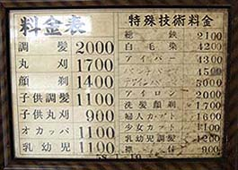

岩間厚生理容所
（聞取り2005年7月29日 福岡県大牟田市野添町）
1997年の三池炭鉱閉山後も、野添社宅で営まれていた岩間厚生理容所が近くの別の場所で今も開業して
いるということを知り、訪れてみた。店内には、閉山前後に写された店舗の写真と水彩画が大切に飾られてあった。
厚生理容所とは、炭鉱社宅にあった理髪店の正式名称で、三井鉱山の社員ではなかったが、社宅を会社から貸してもらって
独立採算制で営業していた。理髪代を会社と組合の両方から低料金に抑えられ、生活は決して楽ではなかったという。
昭和35年頃の理髪代が25円で、社宅外の客も多く、一服する間もなかったほどだったが、炭鉱が閉山して
社宅が無くなった今、訪れる客も一日数人の日が多く、2代目であるという岩間さんは、「健康である限り、あと4,5年は店を続
けるつもりでいるが、この仕事も私の代で終わり」と感慨深げに語った。その時のご主人をいたわるように横目でチラリと見る奥
さんの表情が印象的だった。
このような厚生理容所は、炭鉱社宅ごとに一軒はあり、大牟田市内では当時20軒ほどあったらしい。その中でも、県境に所在
していた四山社宅は規模が大きかったことから、熊本県側と福岡県側に一箇所ずつあったという。閉山を迎えて、理容業を廃業
した人たちが多かったそうであるが、「厚生理容所後も店を続けている所は自分を含めて2軒ほどになった」という。
その色んな思い出の中で、三池争議時代のことが一番心に残っていると、岩間さんは言う。
当時、岩間さんは野添社宅58棟で店を営んでいた。
店主の人柄のせいもあって、散髪をしてもらわない人もよく集まり、店はサロン的な場所になっていた。
しかし、三池争議時代、同理容所のすぐ前が三池新労組（いわゆる第2組合）の闘争本部で、理容所のすぐ左側が三池労組
（いわゆる第1組合）の闘争本部であったことから、「店の前の通りでは第一と第二のけんかが絶えず、警戒のため機動隊が
ズラリと並ぶこともあり、子供心にこわかった」という。時には、包丁を所持し、酒に酔ったチンピラ風の男が店に来て、
「お前は第一か第二か、どっちを味方にするとか！」と詰め寄ってきたり、第一と第二の闘争の最中、「かくまってくれ」と
店に逃げ込んでくる人もいたという。
その割には、厚生理容所は社宅の人からすると部外者と見られることが多く、「4番目の兄が炭鉱に入ってからやっと仲間
として見てくれるようになった」。
炭鉱社宅という所も、ムラ意識が強かったのかも知れない。それだけに、直接は知らない間柄でも、「子供のころ炭鉱社宅
にいた」、あるいは、「親父が炭鉱で働いていた」というだけで、昔からの知り合いのように、互いに仲間意識が芽生えてく
るから、不思議なものである。それが炭鉱という職業の特殊性かも知れない。

炭鉱とは直接関係ないかも知れないが、野添社宅で、「ユウレイを見たことがある」という話もある。
野添社宅の社宅事務所の前を通って横田酒店へおつかいに行った小学校4年生の時のある日のこと、「酒を買って家に帰る
途中、前方から帽子をかぶり黒いコートを着た男の人がカツカツと靴の音をさせて近づいてきた。振り返ると男は社宅
事務所の板塀を透明人間のように通り抜けて建物に入って行ったので、こわくなって急いで家に帰りそのことを親たちに話し
たら、『お前も見たか』と言われ、『以前、事務所で寝泊りしていた人も何度か金縛りに遭うので気持ち悪くなって調べてみ
たら建物の下から古いお墓が出てきたそうだ』と、その因縁を大人たちが語ってくれた。」という。
炭鉱社宅という所、元々は山や雑木林を切り開いて建設された場所が多かったところから、そういう所には昔の古い墓が
あることも多い。したがって、こういう話があっても不思議ではない。その社宅跡も、今また野山に帰ろうとしている。
BACK
|